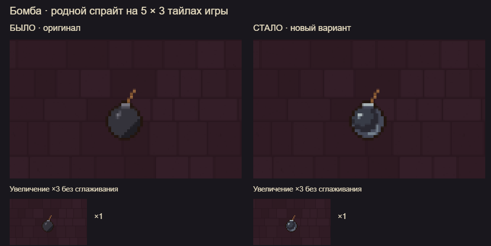
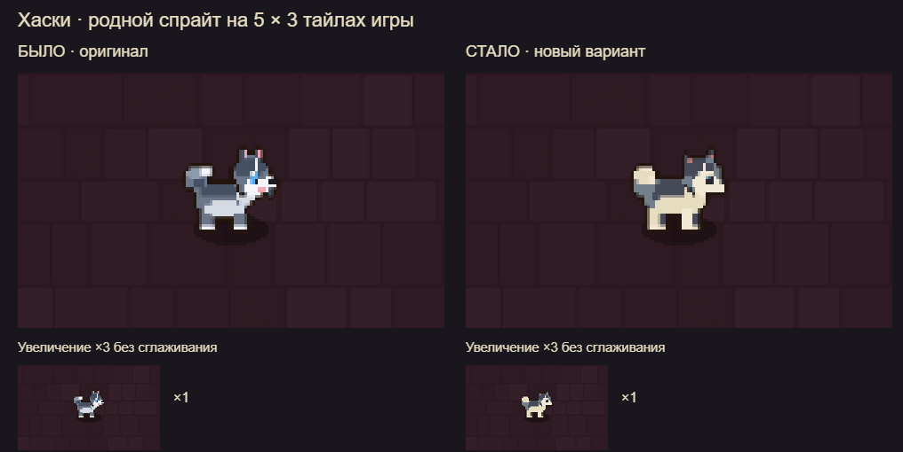
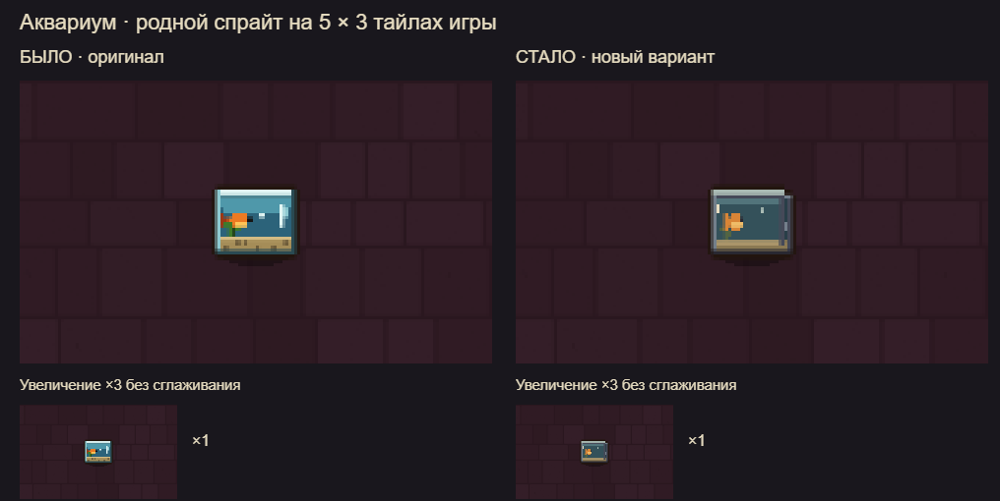
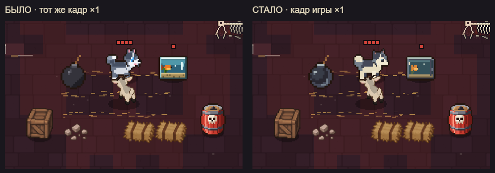
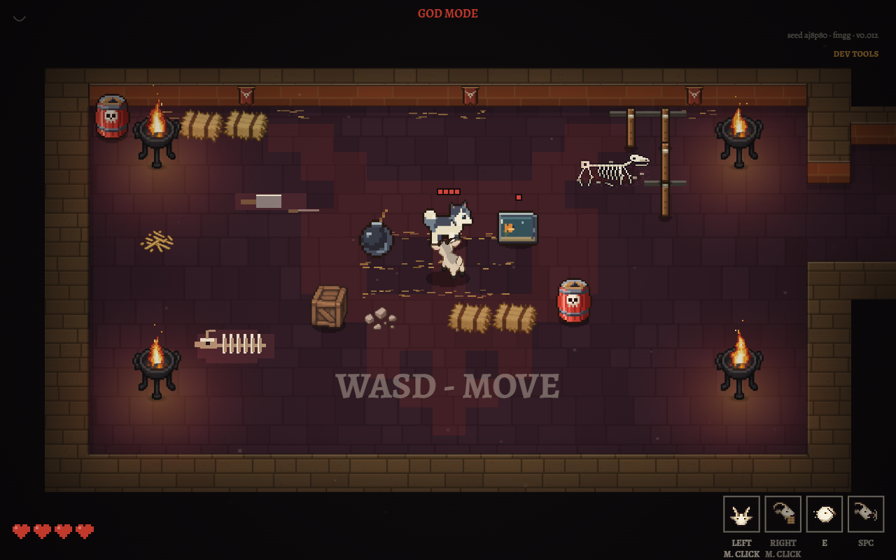
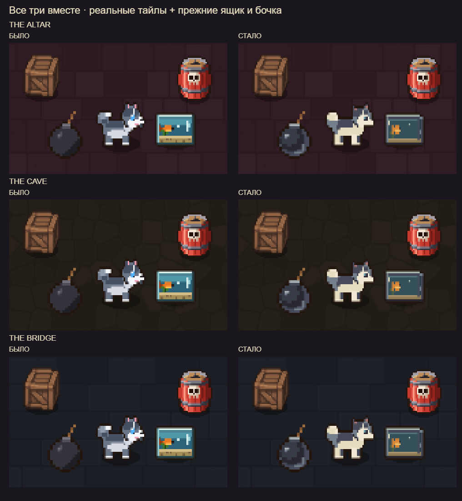

Три спрайта в игре — было / стало
Нативная перерисовка на сетке игры. Размер, коллизии и логика сохранены. Слева оригинал, справа пробный вариант. На каждом листе есть масштаб ×1 и увеличение ×3 без сглаживания.
1. Бомба
14×15 пикселей, 6 цветов. Более круглый корпус, короткий блик и светлый край снизу справа. Фитиль и его горение рисует прежняя игровая логика.

2. Хаски
27×21 пиксель; поющий кадр 27×23. Крупная маска, спокойная спина и светлый хвост. 8 цветов вместо мелких разноцветных акцентов. Вариант теплее оригинала; это заметное изменение характера, а не бесспорное улучшение.

3. Аквариум
22×16 пикселей, 14 цветов на несколько материалов. Темнее вода, меньше бликов, тонкая боковая грань. Сохранены четыре положения рыбки, разбитый аквариум и осколки.

Настоящий кадр игры
Один момент симуляции, одна камера. Переключается только внешний вид этих трёх объектов. Кадры ниже не являются сгенерированной иллюстрацией.


Открыть оригинальный кадр ×1 · Открыть новый кадр ×1
Рядом с соседними тайлами и прежними объектами
Три пола игры, по 5×3 тайла. Ящик и бочка оставлены для сравнения стиля и насыщенности.

Сочетаются ли цвета?
Новая палитра согласованнее с костяными и деревянными деталями игры: тени приглушённые, светлые участки слегка тёплые, оранжевая рыбка — локальный акцент. Но гармония не равна читаемости: тёмная бомба всё ещё близка по яркости к тёмным полам, поэтому важны фитиль и край корпуса. Исходный аквариум ярче и заметнее издалека; новый лучше вписан, но менее броский.
ТеньСерыйКостьВодаРыбка
Проверка и файлы
В игре: вкладка ART → BOMB / HUSKY / FISH. Ссылка #smallart включает вариант при открытии через сервер. По умолчанию остаются оригиналы. Имена вариантов имеют суффикс @small, поэтому кэш не смешивает их.
Размеры, число цветов, контраст со всеми полами, время первой отрисовки и ошибки браузера. Средний контраст — диагностическое число; он не оценивает отдельно край, глаз или рыбку.
PNG в родном разрешении с прозрачным фоном: бомба без динамического фитиля · хаски · пение · рыбка 1 · 2 · 3 · 4 · разбитый аквариум.
12 октября 2026 · пробный вариант для визуального сравнения; не опубликован.